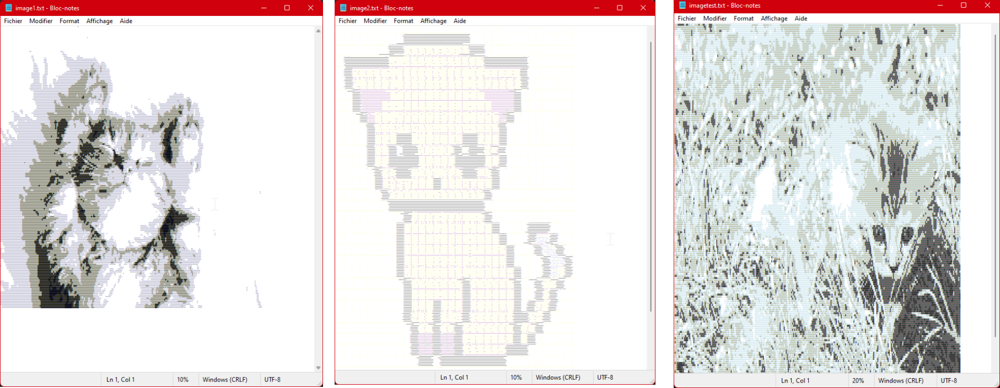

Développement Logiciel - ASCII Art
Rapidement, le contexte de ce projet est de réaliser un logiciel capable d'appliquer un traitement sur une image pour convertir chaque pixel en caractères de la table ASCII. On convertit donc chaque composant de l'image en caractères, comme "W", "w", "l" ...

Caractéristiques techniques du projet
Langages / technologies utilisés
CCe logiciel de traitement d'image se fait à partir d'un simple code en C++. Pour gérer les problèmes qui peuvent arriver dans le traitement d'images, on a utilisé Visual Studio 2019, qui nous donne accès à un débuggeur très puissant. Ainsi, on a pu identifié l'état de nos variables, notamment pour savoir si l'on dépasse la taille de l'image, si l'on dépasse des valeurs …
Combien de temps, qui et quoi ?
Ce projet s'inscrit dans le cadre de ma formation en BUT Informatique Graphique, à travers une SAE (Situation d'Apprentissage et d'Évaluation). Il a donc durée une douzaine d'heures, comprenant le temps de développement, ainsi que le temps de rendu. J'étais en collaboration avec Florian Mure.
Après avoir passé un premier temps sur du code du projet, je suis parti sur la création du compte-rendu de celui-ci, impliquant la bonne compréhension du projet.
Détails du projet
Ce logiciel n'est pas particulièrement ambitieux, mais c'était le premier travail en groupe à réaliser au sein de la formation. Pour le réaliser complètement à 2, nous avions utilisé GitHub, pour la première fois dans mon cas. Cela m'a permis de me former brièvement sur l'outil, et apprendre la collaboration à travers Git comme outil de partage de code.
En terme de code à proprement parler, celui-ci répond aux exigences érigées en début de projet dans le sujet. Nous étions guidé dans sa réalisation (rappel : premier projet "sérieux"), pour autant, nous avons fini dans les délais, même en avance, avec un code qui fonctionnait dans tous les cas. En effet, comme nous traitons une image, il était possible que le traitement ne fonctionne pas selon certaines tailles d'images, selon certaines configurations … Notre projet final est fonctionnel dans tous ces cas-là.
Pour préciser un peu le déroulement de ce projet, il y avait 5 versions, que nous devions réaliser chronologiquement, avec des indications au fur et à mesure :
Version 1
- Récupération d’images en PGM
- Traitement des informations du fichier image (entête et corps)
- Conversion des informations du corps du fichier en ASCII Art
On doit d’abord utiliser un utilitaire fourni, pour transformer des images type PNG ou JPEG en PGM.
Une fois ces images transformées, l’entête contient 2 informations importantes sur le fichier, sa largeur et sa hauteur. Ensuite, le corps du fichier, est composé de chaque pixel, codé sur un octet. Une fois la valeur convertie en ASCII (selon la palette fournie), on peut l’afficher dans la console.
Version 2
- Création d'un fichier texte
- Exportation de l'ASCII Art dans le fichier texte crée
Cette partie est beaucoup plus succincte, il suffit de créer le fichier, que l’on pourra nommer comme on le souhaite. Puis, au lieu d’afficher dans la console, on exporte les valeurs dans le fichier texte créé.
Version 3
- Lecture de fichiers textes "palette"
- Changement de l'affichage de l'ASCII Art selon la palette traitée
On doit donc traiter les données des palettes, en ouvrant le fichier, qui présentent un nombre « aléatoire » de caractères. Du fait du caractère aléatoire du nombre de caractères, on doit adapter le programme pour afficher avec les bons intervalles, les caractères ASCII de la palette.
Version 4
- Entrée d'arguments pour une exécution en invite de commande
- Affichage d'un help
- Changement des arguments pour :
- Fichier d'entrée
- Fichier de sortie
- Fichier de palette
On doit donc utiliser des arguments en entrée du programme, qui vont nous permettre d’afficher une aide, et de changer les paramètres du programme Les arguments sont donc l’aide, et les paramètres du programme, à savoir le chemin du fichier en entrée, du fichier de sortie, et du fichier palette.
Version 5
- Ajout de deux arguments width et height
- Calcul du facteur de diminution
- Calcul de la moyenne de valeurs sur une zone et envoie des valeurs dans un tableau
On rajoute désormais deux arguments width et height qui vont correspondre à la taille maximale que l’on veut pour notre fichier. Seulement, on doit conserver une image propre, c’est donc le facteur de diminution majoritaire qui va être conservé.
Ce facteur de diminution sera donc la valeur maximale du rapport entre la largeur ou la hauteur de l’image et width ou height. A partir de là, on doit parcourir de nouveau le tableau des données, en ne conservant qu’un pixel pour une zone du facteur (exemple, pour un facteur de diminution de 3, on remplace 9 pixels par 1).
Et à la fin, ça nous donne des petits chats tout mignon en caractères de la table ASCII !
Auto-critique du résultat
Etant donné que nous sommes arrivés à la fin des 5 versions du projet, cette critique sera rapide. Nous avons bien travaillé, avec le respect du temps imparti. D'autant plus que nous avions utilisé GitHub (donc Git) pour le partage de code, en se formant brièvement sur l'outil. Cela nous a permis d'avancer vraiment plus vite.